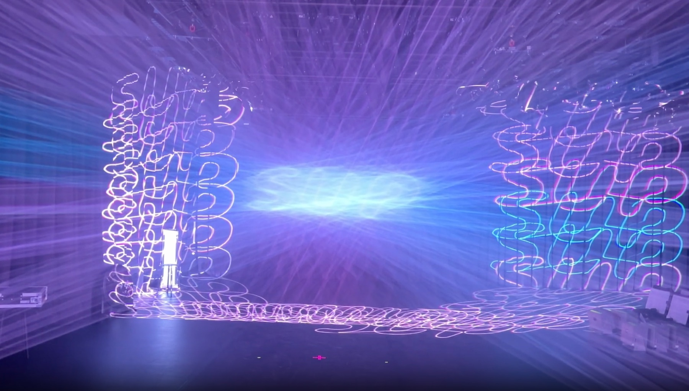
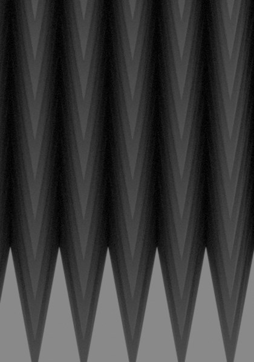
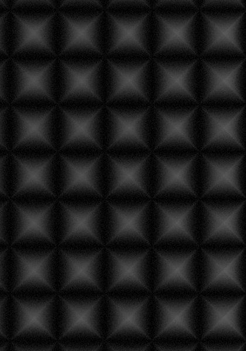
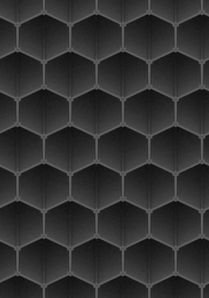
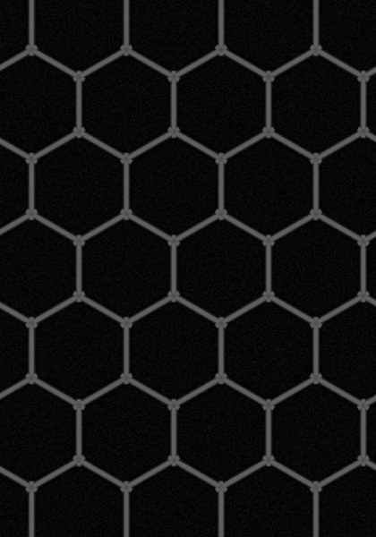
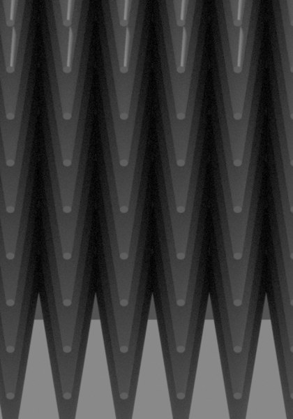
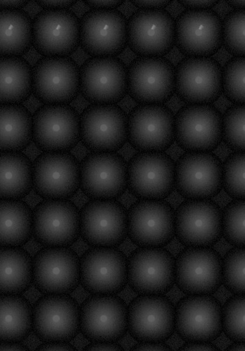
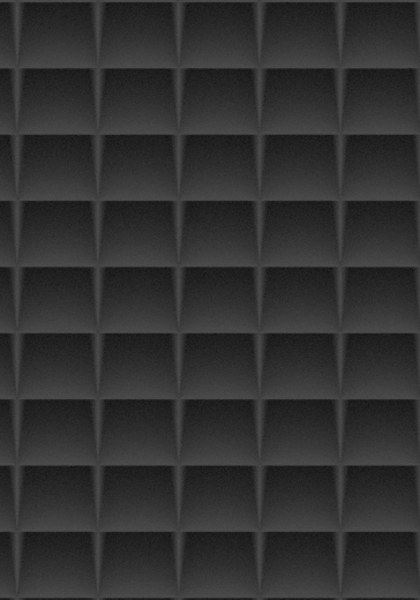
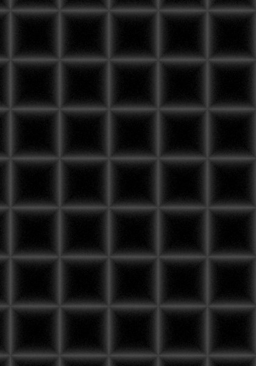

천장 패널 연구 기록한국어EnglishSPILL SINK · 2026-08-11 → 09-15
2026년 8월 11일 → 9월 15일 · 설계 1,643 개
재는 방법을 열세 번 고쳤고 순위는 여섯 번 뒤집혔다
레이저가 천장에 그리는 복제본을 지우는 판 (panel) 을 설계했습니다.
이 기록은 최종 답이 아닙니다. 재는 방법이 어떻게 바뀌었고, 그때마다 순위가 어떻게 뒤집혔는지를 적었습니다.
커밋 54 개조사 기록 50 건최종 후보 14 개실물 측정 0 건
00
무엇을 만드는가
레이저가 공중에 그림을 만듭니다. 그 빔은 그림을 지나 천장까지 갑니다.
그러면 천장에 그림의 또렷한 복제본이 그려집니다.
관객은 공중의 그림이 아니라 천장의 복제본을 봅니다. 작품이 망가집니다.
빔을 끌 수는 없습니다. 날아가는 빔 자체가 작품이기 때문입니다.
그래서 천장에 붙일 판을 만듭니다. 빔이 닿으면 사라지도록.

사진 · 지우려는 것
가운데가 공중에 맺힌 그림 (공중 영상, aerial image) 이고, 천장과 벽에 퍼진 것이 지우려는 복제본입니다.
빔은 그림을 지나 계속 날아가 천장에 닿습니다. 이 방의 천장은 3.5 m 입니다.
왼쪽 프로젝터는 +쪽을, 오른쪽은 −쪽을 겨눕니다. 값이 크면 서로 건너질러 크게 겹칩니다
왼쪽 빔 · 입사각 incidence
—
천장에 수직인 선 (법선, normal) 에서 잰 각
오른쪽 빔 · 입사각
—
빔 가운데가 겨누는 천장 자리로 겨냥 각도가 정해집니다
겹치는 구간 cross
—
두 빔이 같이 닿는 천장 구간. 여기가 가장 밝습니다
관객이 보는 각도
—
관객 눈에서 천장의 밝은 구간을 올려다보는 각. 우리가 잰 관객 각도는 0·20·40·60°
이 방의 천장은 3.5 m 입니다.
이 기록의 앞부분은 천장을 6 m 로 놓고 쟀습니다. 그때는 빔이 천장을 30~45 도로 때렸습니다.
천장이 낮아지면 같은 거리에서 각도가 눕습니다. 프로젝터를 2 m 높이에 두면, 천장 6 m 에서는
4 m 떨어져야 45 도인데 천장 3.5 m 에서는 1.5 m 만 떨어져도 45 도입니다. 그보다 먼 천장은 전부 45 도를 넘습니다.
그래서 이 기록의 숫자는 각도 조건이 다릅니다. 순위를 매긴 각도(30·40·45 도)를 다시 정하고
45 도 너머를 새로 재야 합니다. 아직 안 했습니다.
01
재는 것 세 가지
비교 기준은 “무늬 없이 검정 페인트만 칠한 평평한 천장” 입니다. 이것을 1 로 놓습니다.
이름
무슨 뜻인가
어느 쪽이 좋은가
번지는 정도 모양 뭉개기 · form smear
돌아온 빛이 원래 그림 모양을 얼마나 잃었나
높을수록 좋다. 1 이면 모양이 그대로 남는다
돌려보내는 빛의 양 반사 총량 · total reflectance
천장에 닿은 빛 중 방으로 되돌아오는 비율
낮을수록 좋다
관객 눈에 들어오는 밝기 정면 반짝임 · head-on peak
그 빛이 사람 눈으로 얼마나 오나
낮을수록 좋다
자주 나오는 말 — 판 (panel) 천장에 붙이는 한 장. 칸 (unit cell) 그 판에 되풀이되는 한 단위. 화소 (pixel) 계산 화면을 이루는 점. 깊이 (depth) 칸이 파인 깊이. 도료 (coating) 칠하는 재료. 입사각 (incidence angle) 빛이 천장에 닿는 각. 간격 (pitch) 칸과 칸 사이 거리.번지는 정도가 1 순위입니다.
이 일의 목적이 “천장에 글자가 안 읽히게” 이기 때문입니다. 어둡게 만드는 것은 그다음입니다.
처음에는 이 셋 중 하나만 재고 있었습니다 (아래 3 번).
02
겨룬 모양들
아래는 실제로 계산에 쓴 형상을 그대로 렌더한 것입니다. 위는 비스듬히 본 모습, 아래는 측정 카메라가 똑바로 내려다볼 때 보이는 모습입니다.


피라미드 pyramid
간격 4 · 깊이 22 mm. 몰드로 찍어냄. 최종 후보 1 등


벌집 honeycomb
칸 9.53 · 깊이 40 mm. 알루미늄, 사 오는 물건


원뿔 cone
간격 5.5 · 깊이 30 mm. 한때 1 등이었다가 꼴찌가 됨


뒤집힌 피라미드 inverted pyramid
파인 홈. 태양전지에서는 이기지만 여기서는 짐
벌집을 똑바로 내려다본 사진이 가장 새카맣습니다.
돌려보내는 빛의 양으로는 실제로 벌집이 제일 좋습니다. 그런데 그것만 보고 고르면 틀립니다.
왜 틀리는지가 이 기록의 3 번입니다.
03
측정 방법이 바뀐 열세 번
아래 열세 번 중 여섯 번은 순위가 뒤집혔고, 세 번은 값만 움직이고 순위는 그대로였습니다. 그 차이가 어디서 오는지가 맨 끝에 정리돼 있습니다.
1도료를 각도에 따라 다르게8월 11일 밤
어떻게 쟀었나
빛이 어느 각도로 와도 도료가 똑같은 비율로 되튕긴다고 놓고 계산했습니다.
뭐가 틀렸나
논문에서 무소 블랙 (Musou Black) 을 실제 장비로 잰 값을 찾았습니다. 비스듬할수록 밝아집니다. 우리 계산은 각도가 변해도 값이 안 변했습니다. 정면에서 2 배, 비스듬한 각에서 7 배 낙관적이었습니다.
그림 2 · 도료가 각도에 따라 돌려보내는 빛점선이 우리가 쓰던 값, 실선이 논문 실측입니다. 실제 도료는 비스듬히 맞을수록 밝아지는데 우리 값은 평평했습니다. 방향 자체가 반대였습니다.그림 3 · 고친 뒤 나빠진 정도골이 깊은 모양일수록 크게 손해 봤습니다. 거울처럼 튕기면 옆면에 맞은 빛이 골 안쪽으로 더 들어갑니다. 퍼뜨리며 튕기면 골 벽 어느 자리에서나 바깥이 바로 보여서 그냥 새어 나갑니다.
순위가 어떻게 됐나고치니 돌려보내는 빛의 양이 모든 모양에서 나빠졌습니다. 그런데 나빠진 정도가 달랐습니다. 평평한 판 2 배, 홈 8.8 배, 원뿔 41 배. 추천하던 원뿔이 1 등에서 꼴찌가 됐습니다. 그때까지 한 계산을 전부 다시 돌렸습니다.
2“끝을 뾰족하게” 를 버림8월 11일 밤
어떻게 쟀었나
규칙이 하나 있었습니다. “빛에 드러나는 면이 좁을수록 어둡다.” 뿔의 끝은 점이고 홈 (groove) 의 끝은 선입니다. 점이 훨씬 좁으니 뿔이 이긴다고 봤습니다.
뭐가 틀렸나
확인하려고 일부러 질 모양을 넣었습니다. 벌집입니다. 벌집은 빛에 드러나는 면이 뿔보다 41 배 넓으니, 규칙대로면 41 배 나빠야 합니다.
재보니 1.5 배였습니다. 예상이 27 배 빗나갔습니다.
순위가 어떻게 됐나규칙을 버렸습니다. 뾰족한 끝이 설계 1 순위에서 내려왔습니다. 다시 찾아보니 실제로 성능을 정하는 것은 골이 얼마나 깊고 좁은가 였습니다. 설계 192 개에서 이 설명이 맞았습니다.
3재는 항목을 하나에서 셋으로8월 12~15일
어떻게 쟀었나
돌려보내는 빛의 양 하나로만 줄을 세웠습니다.
뭐가 틀렸나
이 하나로는 두 가지 실패를 못 잡습니다.
실패 하나 — 어둡게 만들었는데 글자가 읽힌다
그림 4 · 벌집의 함정벌집은 돌려보내는 빛이 평평한 천장보다 42 배 적습니다. 이것만 보면 1 등입니다. 그런데 번지는 정도가 1.0 입니다. 모양이 하나도 안 뭉개집니다. 어두운 글씨도 글씨입니다.
실패 둘 — 어둡고 번지는데 한 방향으로 몰린다
그림 5 · 피라미드 끝을 1.1 mm 잘랐을 때만들기 훨씬 쉬워지는 변경입니다. 빛의 양은 1.28 배 나빠지는 데 그칩니다. 그런데 관객 눈에 들어오는 밝기는 7.4 배 나빠집니다. 빛의 양만 봤으면 “남는 장사” 라고 판단했을 변경입니다.
순위가 어떻게 됐나한 항목짜리 순위표를 없앴습니다. 지금도 세 항목을 같이 안 적은 표는 만들지 않습니다.
4모양마다 자기 공정이 주는 치수로8월 13~16일
어떻게 쟀었나
끝 굵기를 섞어서 비교했습니다. 판금은 0.05 mm, 몰드로 찍는 원뿔은 0.4 mm.
뭐가 틀렸나
끝이 가늘수록 유리합니다. 조건이 다른데 나란히 놓으면 비교가 아닙니다.
그렇다고 전부 0.4 mm 로 통일하는 것도 틀렸습니다. 벌집은 사 오는 물건이라 0.03 mm 가 그냥 됩니다. 0.4 로 맞추는 것은 벌집한테만 벌을 주는 것입니다.
그리고 1 등이 벽 두께 0.1 mm 에 깊이 50 mm 짜리였습니다. 종이보다 얇은 벽이 5 cm 서 있어야 합니다. 3D 프린터 노즐이 0.4 mm 라 애초에 못 뽑습니다. 숫자로는 안 보였고, 그려서 눈으로 보고 알았습니다.
여기서 배운 것. 컴퓨터는 내가 정해준 범위 안에서만 답을 찾습니다. 범위 끝에 가장 좋은 값이 있으면 거기로 갑니다. 그러니 범위를 대충 정하면, 순위표에 남는 것은 설계의 우열이 아니라 내가 고른 범위입니다.
이 과정에서 두 공정을 떨어뜨렸습니다. 사출 (injection moulding) 은 골짜기 바닥이 아주 살짝만 둥글어져도 반짝임이 허용치의 2 배를 넘습니다. 압출 (extrusion) 은 피라미드의 끝이 점인데 뽑아낸 홈의 끝은 선이라, 같은 굵기라도 훨씬 밝습니다.
순위가 어떻게 됐나끝 굵기를 맞추자 판금이 1 등에서 내려오고 원뿔이 올라왔습니다. 못 만드는 설계는 목록에서 뺐습니다. 이후로는 모양마다 그 공정이 실제로 내주는 치수로 잽니다.
5답이 알려진 문제로 계산기를 검증8월 15~17일
어떻게 쟀었나
계산 프로그램 하나만 썼습니다. 맞는지 확인할 방법이 없었습니다.
뭐가 틀렸나
만든 팀이 다른 두 번째 계산기로 같은 것을 다시 계산했습니다. 쓰던 것은 Cycles, 대조한 것은 Mitsuba 입니다. 둘 다 회사 제품이 아니라 공개된 프로그램입니다.
먼저 비교 자체가 틀려 있었습니다. 두 프로그램이 튕김 횟수를 세는 방식이 달랐습니다. Cycles 의 “N 번” 이 Mitsuba 에서는 “N+2” 입니다. 처음에는 한쪽에 한 번 적게 주고 비교했습니다. 이것을 고치고 다시 쟀습니다.
두 모양은 잘 맞았고, 세 번째 모양에서 27 % 갈렸습니다. 그런데 두 프로그램끼리 봐서는 누가 맞는지 알 수 없습니다. 그래서 답이 이미 알려진 문제에 둘 다 풀려봤습니다.
기준으로 삼은 문제. 답이 논문과 기술 자료에 식으로 나와 있는 것들입니다.
기준 문제
답의 출처
Cycles
Mitsuba
빛을 가두는 구슬 안에서 평균 40 번 튕길 때의 밝기
적분구 (integrating sphere) 기술 자료의 식
오차 0.06 %
오차 0.22 %
빛을 하나도 안 먹는 공간에서 2048 번 튕겨도 에너지가 보존되나
물리 법칙
0.99974
—
평평한 판이 제 반사율을 그대로 읽나
정의 그대로
맞음
맞음
여기에 따로 짠 세 번째 계산기를 하나 더 만들어 대조했습니다. Cycles 는 셋 다 맞았고, Mitsuba 만 얇은 벽에서 셋 다와 어긋났습니다.
순위가 어떻게 됐나안 바뀌었습니다. 우리 숫자가 맞다는 것이 확인됐습니다.
6시료 크기가 바뀌어도 같은 답이 나오게8월 20일 → 8월 28일 → 9월 15일
어떻게 쟀었나
재는 범위를 “몇 칸을 본다” 로 적어놨습니다. 판이 커지면 한 칸의 실제 길이가 같이 커집니다. 판 크기가 바뀔 때마다 재는 범위가 저절로 변했습니다.
왜 이것이 큰 문제인가
제대로 된 측정 장비는 같은 물건을 크게 잘라 재든 작게 잘라 재든 같은 답을 줍니다. 우리 장비는 그것이 안 됐습니다. 그러면 두 설계를 비교한 결과를 믿을 수 없습니다.
첫 번째 — 8월 20일 · 결함 9 개
사용자가 돌린 계산에서 번지는 정도가 15.46 이 나왔습니다. 좋은 설계가 보통 1.5~4 인데 열 배 넘게 큰 값이라 의심스러웠습니다. 쫓아가 보니 설계가 아니라 재는 장비 (measurement rig) 가 고장 나 있었습니다.
결함 9 개 중 6 개가 같은 실수였습니다. 길이를 적어야 할 자리에 개수를 적은 것.
순위가 어떻게 됐나간격이 굵은 설계의 판정이 뒤집혔습니다. 번지는 정도가 1.272 라 “쓸모없다” 였는데, 제대로 재니 24.77 이었습니다. 그리고 관객 눈에 들어오는 밝기가 0.173 에서 0.189 로 바뀌었습니다. 덕분에 끝을 0.1 에서 0.4 mm 로 뭉툭하게 만드는 대가가 4.3 배인 줄 알았는데 2.8 배였습니다. 만들기 쉬운 쪽에 유리한 정정이었습니다.
다 못 고쳤습니다. 칸 (unit cell) 50 개를 봐도 값이 안 멈췄습니다. “미해결” 로 남겨뒀습니다.
두 번째 — 8월 28일 · 몇 칸이 보여야 답이 멈추나
사용자가 물었습니다. “판 500 이면 화소도 많고 시간도 더 걸리는데 답이 같아도 되느냐, 무슨 기준이 있을 것 아니냐.”
쫓아가 보니 화소는 문제가 아니었습니다. 화소 (pixel) 크기는 판마다 0.215 mm 로 고정이고, 판이 커지면 화소 수가 그만큼 늘어납니다. 답을 바꾸는 것은 “몇 칸이 보이느냐” 였습니다. 다른 축이었습니다.
그림 6 · 판에 칸이 몇 개 들어가야 답이 멈추나같은 설계인데 판을 작게 자르면 답이 달라집니다. 4 칸짜리로 잰 값은 못 씁니다. 칸이 늘어야 값이 가라앉습니다.
세 번째 — 9월 15일 · 감사에서 또 걸림
외부 감사가 짚었습니다. “값이 아직 안 멈췄는데 멈췄다고 판정한다.”
판정 방식을 다시 고쳤습니다. 지금은 가장 넓게 본 값을 쓰고, 판 가장자리로 빛이 새는지까지 확인합니다. 아직 남은 한계도 적어뒀습니다. 판 밖으로 나간 빛은 어떤 방법으로도 못 봅니다.
7항목마다 다른 조건에서 재기8월 20일
어떻게 쟀었나
한 번 계산한 결과로 세 항목을 다 발표했습니다.
뭐가 틀렸나
세 항목은 봐야 할 것이 서로 다릅니다. 하나로 셋을 내면 최소 하나는 틀린 조건에서 잰 값입니다.
재는 항목
어느 각도로
얼마나 잘게
얼마나 넓게
돌려보내는 빛의 양
정면과 ±40 도
화소 0.215 mm
판 전체, 칸 25 개 이상
번지는 정도
±40 도
화소 0.215 mm
값이 멈출 때까지 넓힘
관객 눈에 들어오는 밝기
정면
화소를 끝 굵기의 4 분의 1 로
칸 10 개짜리 조각
특히 세 번째가 문제였습니다. 화소가 피라미드 끝보다 굵으면 뾰족한 봉우리 (peak) 가 뭉개져서 실제보다 어둡게 나옵니다. 끝이 가는 설계일수록 더 많이 봐줬습니다.
순위가 어떻게 됐나한 번에 셋을 내던 것을 그만뒀습니다. 이후 모든 표에 어떤 조건으로 쟀는지를 같이 적습니다.
8도료가 빛을 퍼뜨리는 비율을 실측값으로8월 21일
어떻게 쟀었나
도료가 빛을 퍼뜨리는지 거울처럼 되쏘는지를 0.76 대 0.24 로 놨습니다. 이 값을 확산 비율 (diffuse fraction) 이라고 부릅니다. 이것은 잰 값이 아니라 그냥 고른 값이었습니다.
뭐가 틀렸나
평평한 판의 총량만 재서는 이 값을 알 수 없습니다. 퍼뜨리든 거울처럼 되쏘든 총량은 똑같이 나오기 때문입니다. 논문에서 실제 측정값을 찾았습니다. 무광 검정 스프레이 0.999, 검정 아노다이징 0.994~0.999. 실제 도료는 거의 전부 퍼뜨립니다. 우리는 4 분의 1 을 거울로 놓고 있었습니다.
이 값을 바꾸면 두 항목이 반대로 움직입니다. 퍼뜨릴수록 골 안에 빛이 덜 갇히니 돌려보내는 빛의 양은 나빠집니다 (1 번의 원뿔 41 배). 퍼뜨릴수록 빛이 좁게 안 몰리니 관객 눈에 들어오는 밝기는 좋아집니다 (4 분의 1).
이 값은 다섯 주 동안 네 번 바뀌었고, 바뀔 때마다 순위나 숫자가 흔들렸습니다. 그리고 아직 실물로 재지 않았습니다. 전부 논문 그림에서 읽은 값입니다.
순위가 어떻게 됐나순위가 뒤집혔습니다. 그리고 관객 눈에 들어오는 밝기가 4 분의 1 로 떨어졌습니다. 거울처럼 되쏘는 몫이 줄어드니 좁게 몰리던 빛이 넓게 퍼졌습니다. 돌려보내는 빛의 양은 거의 안 움직였습니다.
9거칠기 단위 바로잡기8월 22일
어떻게 쟀었나
논문에 적힌 거칠기 값을 프로그램에 그대로 넣었습니다.
뭐가 틀렸나
그 프로그램은 거칠기 (roughness) 입력값을 제곱해서 씁니다. 0.012 를 넣으려다 0.000144 를 넣었습니다. 83 배 차이입니다. 훨씬 매끈한 재질을 계산하고 있었습니다.
여기서 예측이 틀렸습니다. 밝기가 내려간다고 적었습니다. 두 가지가 반대로 움직이고 있었습니다. 퍼뜨리는 비율이 올라 3 배 내려갔는데, 반사가 좁아져 5.3 배 올라갔습니다. 좁아진 쪽이 이겼습니다.
순위가 어떻게 됐나돌려보내는 빛의 양은 순위가 그대로였습니다. 값도 최대 1.7 % 밖에 안 움직였습니다. 관객 눈에 들어오는 밝기만 여섯 설계 전부 1.38 배 올랐습니다.
10얼마나 깊이 칠해야 하는지 재기8월 25일
어떻게 쟀었나
관 안쪽 끝까지 칠해야 한다고 전제했습니다. 업체가 “벌집은 안쪽까지 못 칠한다” 고 해서 칠하는 방법을 찾고 있었습니다.
뭐가 틀렸나
얼마나 깊이 칠해야 하는지를 한 번도 안 재봤습니다. 재보니 되돌아오는 빛이 나오는 곳이 이랬습니다.
되돌아오는 빛이 어디서 나오나
몫
판 겉면 테두리
51 %
맨 아래 받침판
48 %
관 안쪽 깊은 벽
0.4 %
업체가 못 한다던 그 부분이 필요 없는 부분이었습니다. 테두리는 겉면이라 칠하기 쉽고, 받침판은 벌집을 붙이기 전에 칠하면 됩니다.
같은 날 하나 더. 태양전지 논문은 피라미드를 뒤집어 파는 쪽이 낫다고 합니다. 믿지 않고 직접 쟀습니다. 번지는 정도가 1.46 에서 1.07 로 무너졌습니다. 뒤집으면 빛이 온 길로 되돌아갑니다. 태양전지에서는 그것이 이득이고 우리에게는 손해입니다.
순위가 어떻게 됐나받침판을 칠하니 칸 크기 순위가 뒤집혔습니다. 칸 9.53 mm 가 6.35 mm 를 세 각도에서 모두 이겼습니다. 그 전까지는 칸이 작을수록 좋다고 알고 있었습니다.
11보는 각도를 정면에서 실제 방 각도로8월 27일
어떻게 쟀었나
관객이 천장을 똑바로 올려다본다고 놓고 계산했습니다. 코드는 각도를 받게 돼 있었는데, 부르는 쪽에서 계속 0 을 넣고 있었습니다. 아무도 몰랐습니다.
뭐가 틀렸나
설치 조건을 알게 됐습니다 (위 00 절). 천장을 6 m 로 놓았을 때 빔이 천장을 30~45 도로 비스듬히 때립니다. (2026-09-18 정정: 실제 방은 천장 3.5 m 라 각도가 더 눕습니다. 00 절에서 직접 움직여 볼 수 있습니다.) 똑바로 때리는 일은 이 방에서 안 일어납니다. 똑바로 때리려면 프로젝터가 천장 바로 밑에 있어야 하는데, 그러면 공중에 영상이 안 생깁니다.
두 주 동안 이 방에서 절대 안 일어나는 상황을 재고 있었습니다.
그림 7 · 관객이 보는 각도에 따라 우열이 뒤바뀐다20°·50°·60° 는 피라미드가, 30~40° 는 벌집이 어둡습니다. 피라미드가 40° 에서 0.4675 로 치솟는 것은, 마주 보는 두 면이 좁은 골을 이뤄 두 번 튕긴 빛을 온 길로 되쏘기 때문입니다.
벌집이 비스듬히 보면 밝은 이유도 알아냈습니다. 관 속이 아니라 벽입니다. 빔이 40 도로 들어오면 칸 한쪽 벽이 11.4 mm 높이까지 밝아집니다. 그 밝아진 벽은 빛이 온 쪽에서만 보입니다. 손으로 계산해보니 딱 맞았습니다.
모양을 바꿔도 빛이 없어지지는 않습니다. 가는 방향만 달라집니다. 벌집은 돌려보내는 빛의 양으로 보면 평평한 천장보다 42 배 어둡습니다. 그런데 빛이 온 쪽에 서서 보면 0.137 입니다.
순위가 어떻게 됐나한 모양이 다 이기지 않게 됐습니다. 관객이 어디 서느냐로 답이 갈립니다.
12빔이 떨어지는 자리를 여러 곳에서8월 28일
어떻게 쟀었나
빔을 칸의 한 자리에만 쏘고 쟀습니다.
뭐가 틀렸나
빔은 굵기가 7.5 mm 인데 칸은 50 mm 입니다. 칸의 15 % 만 덮습니다. 어디에 떨어지느냐가 답을 정합니다.
그림 8 · 빔이 칸의 어디에 떨어지느냐같은 설계인데 23 배 갈립니다. 그리고 실제 레이저는 우리 격자에 맞춰 떨어지지 않습니다.
순위가 어떻게 됐나한 자리가 아니라 열여섯 자리에 쏴서 가장 밝은 값을 쓰기로 바꿨습니다. 좋게 나오는 자리만 골라 쓰던 것을 막았습니다.
13외부 감사가 짚은 다섯 가지9월 14~15일
외부 감사가 들어왔습니다. 판정이 매서웠습니다.
“후보를 고르는 도구로는 쓸 수 있다. 하지만 지금 계산으로 실제 반사율이 얼마다, 모든 방향에서 좋다, 레이저에 안 상한다 는 주장은 할 수 없다.”
무엇이
무엇이 문제였나
명령 전달
화면에서 설정을 바꿔도 열 개가 계산에 전달되지 않았다. 도료 종류, 칠 깊이, 보는 각도 같은 것들
도료 계산식
램프와 눈의 자리를 맞바꾸면 238 % 다른 값이 나왔다. 물리적으로 있을 수 없다
무소 재료값
논문 그림을 잘못 읽었다
밝기 재는 법
화면의 점 하나로 쟀다. 화면을 잘게 쪼개면 같은 판인데 값이 1.0 에서 0.1 로 떨어졌다
수렴 판정
값이 아직 안 멈췄는데 멈췄다고 판정했다 (위 6 번의 세 번째 수정)
다섯 다 그동안 발표한 숫자를 흔들 수 있었습니다. 그래서 새 모양을 찾기 전에 재는 도구부터 고쳤습니다.
그림 9 · 감사 전후세 항목이 다 나빠졌습니다. 그런데 설계들 사이의 순위는 안 바뀌었습니다. 모두 똑같이 나빠졌고, 1 등은 그대로 1 등이었습니다.
밝기는 점 하나가 아니라 2 mm 상자의 평균으로 재게 바꿨습니다. 이제 화면을 잘게 쪼개도 값이 안 변합니다.
그리고 비용을 아끼려고 미뤘던 검사에서 진짜 결함이 나왔습니다. 계산에 쓰는 빛줄기 (표본 수, samples) 가 모자랐습니다. 늘리니 값이 4.55 % 움직였습니다. 16 에서 256 으로 올렸습니다.
순위가 어떻게 됐나세 항목이 다 나빠졌는데 설계 사이의 순위는 그대로였습니다. 마지막으로 사용자가 화면에서 직접 다시 계산해 보고서 숫자와 맞춰봤습니다. 14 개 요청이 전부 같았고, 실제로 다시 계산한 7 개가 최대 0.072 % 차이로 맞았습니다.
04
전체를 놓고 보면
순위가 뒤집힌 여섯 번
언제
무엇을 바꿔서
8/11
도료를 각도에 따라 다르게 → 원뿔이 1 등에서 꼴찌로
8/16
모양마다 자기 공정 치수로 → 판금이 내려오고 원뿔이 올라옴
8/20
재는 범위를 길이로 → 굵은 간격 설계가 되살아남
8/21
퍼뜨리는 비율을 실측값으로 → 밝기 4 분의 1
8/25
받침판을 칠함 → 칸 9.53 이 6.35 를 이김
8/27
보는 각도를 실제 방 각도로 → 한 모양이 다 이기지 않게 됨
안 뒤집힌 세 번
언제
무엇을 했나 · 결과
8/17
답이 알려진 문제로 계산기 검증 → 27 % 갈렸는데 우리 쪽이 맞았다
8/22
거칠기 단위 83 배 정정 → 빛의 양 순위 그대로
9/15
외부 감사 다섯 항목 수정 → 세 값이 다 나빠졌는데 순위 그대로
이 세 번이 더 중요합니다. 셋 다 계산을 더 정확하게 만든 것인데, 셋 다 순위가 안 움직였습니다.
여기서 규칙이 하나 보입니다.
“무엇을 재느냐” 나 “어떤 조건에서 재느냐” 를 바꾸면 순위가 뒤집혔습니다. 계산의 정확도만 올리면 값은 움직여도 순위는 안 움직였습니다.
마지막 세 번이 전부 정확도 쪽이었고, 세 번 다 순위가 안 움직였습니다. 지금 순위를 믿어도 되는 이유가 이것입니다.
그리고 남는 것 하나. 아직 실물로 재본 적이 한 번도 없습니다. 위 열세 번은 전부 계산 안에서 일어난 일입니다. 평평한 판 한 장만 제대로 재면 가장 크게 흔들리던 값(도료가 빛을 퍼뜨리는 비율)이 풀립니다.
05
깊이를 정하는 것은 각도다
이 기록을 쓴 다음 날 벌집을 다시 봤고(9월 16일), 이틀 뒤에 천장이 6 m 가 아니라
3.5 m 라는 것을 알았습니다(9월 18일). 따로 나온 것 같던 것들이 한 줄로 이어집니다.
빔이 비스듬히 들어올수록 관이 얕아도 됩니다. 깊이도, 칠하는 깊이도, 같은 셈이 정합니다.
하나 — 깊이 40 은 필요 없었습니다
벌집 셀 9.53, 전부 무소. 깊이만 바꿨습니다. 방 조건은 그때 알던 30~45 도입니다.
깊이
방 조건 최대
정면
40 mm (지금 사양)
0.208 %
0.035 %
30 mm
0.210 %
0.044 %
20 mm
0.215 %
0.071 %
10 mm
0.222 %
0.172 %
깊이를 4 분의 1 로 줄여도 방 조건에서 6.7 % 나빠질 뿐입니다.
정면은 4.9 배 나빠지는데, 정면은 이 방에서 안 일어납니다 (위 11 번).
깊이 40 은 8월 25일에 골랐습니다. 그때 본 것이 정면 0.039 대 0.080 이었습니다.
이틀 뒤에 정면 축을 버렸는데, 깊이 결정은 다시 안 봤습니다.
이 기록의 11 번에서 배운 것을 여기서 한 번 더 놓치고 있었습니다.
둘 — 얼마나 얕아도 되는지는 각도가 정합니다
왜 깊이를 줄여도 되는지는 셈이 답합니다. 비스듬히 들어온 빛이 바닥판을 직접 못 보려면
깊이가 셀 ÷ tan(들어오는 각) 보다 커야 합니다. 셀 10 mm 면 이렇습니다.
셀 10 mm, 전부 무소, 판 500. 깊이와 들어오는 각도만 바꿨습니다.
굵은 칸은 깊이 20 mm 와 2 % 안에서 같아진 곳입니다 (2026-09-18 측정).
깊이
30 도
45 도
55 도
60 도
65 도
70 도
75 도
20 mm (지금 결론)
0.174 %
0.228 %
0.273 %
0.303 %
0.335 %
0.374 %
0.421 %
10 mm
0.212 %
0.229 %
0.274 %
0.302 %
0.335 %
0.375 %
0.420 %
6 mm
0.315 %
0.289 %
0.287 %
0.303 %
0.336 %
0.376 %
0.422 %
4 mm
0.439 %
0.410 %
0.379 %
0.363 %
0.353 %
0.377 %
0.422 %
3 mm
0.534 %
0.519 %
0.495 %
0.472 %
0.439 %
0.409 %
0.423 %
2 mm
0.661 %
0.680 %
0.691 %
0.686 %
0.666 %
0.614 %
0.514 %
문턱이 셈이 말한 자리에 그대로 있습니다.
45 도에서는 10 mm, 60 도에서는 6 mm, 70 도에서는 4 mm, 75 도에서는 3 mm 부터 깊이 20 과 같아집니다.
셈이 말한 값은 각각 10.0 · 5.8 · 3.6 · 2.7 mm 입니다.
천장이 3.5 m 라 빔이 맞는 자리가 대부분 45~78 도입니다.
거기서는 깊이 10 mm 가 깊이 20 mm 와 같습니다 (45 도에서 0.229 대 0.228).
판 두께가 22 에서 12 mm 로, 칠할 면적이 판 면적의 9.0 배에서 5.0 배로 내려갑니다.
조건이 하나 붙습니다. 45 도보다 곧게 맞는 자리가 천장에 있으면 안 됩니다.
30 도에서는 깊이 10 이 깊이 20 보다 22 % 밝습니다. 그 자리는 프로젝터 바로 위
반지름 1.5 m 안입니다 (00 절 도구에서 직접 움직여 볼 수 있습니다).
셋 — 셀 안쪽을 안 칠해도 됩니다. 조건이 둘 붙습니다
“알루미늄 벌집을 은색 그대로 두고 위와 아래만 칠하면 되지 않느냐” 를 재봤습니다.
맨 알루미늄 (bare aluminium) 재료를 새로 넣었습니다. 가시광 총반사 (total hemispherical reflectance) 86 %, 밝은 면과 무광 면이 같습니다
[적분구 실측, Pozzobon & Levasseur 2019].
그림 11 · 위에서 몇 mm 를 칠해야 하나
아래쪽은 맨 알루미늄입니다. 테두리만 칠하면 30 도에서 26 %. 전부 칠한 것보다 180 배 밝습니다.
20 mm 에서 전부 칠한 것과 만납니다. 빛이 벽에 처음 닿는 자리가 깊이 4.8~8.3 mm 이기 때문입니다.
관찰자 40 도, 방 조건. 세 축을 모두 잰 값입니다.
셀 벽 아래쪽
반사 총량
번지는 정도
관객 눈 밝기
5 % 검정으로 칠함 (지금 사양)
0.166 %
1.013
0.1214
맨 알루미늄 (위 20 mm 만 무소)
0.166 %
1.014
0.1215
맨 알루미늄 (테두리만 무소)
30.3 %
1.564
18.41
조건 하나. 빔이 4~23 도로 들어오면 안 됩니다.
그 각도에서는 빛이 칠한 20 mm 를 지나쳐 은색 벽에 처음 닿습니다. 값이 3.5 배 오릅니다.
이 방은 30~45 도라 안전하지만 여유가 7 도뿐입니다. 프로젝터를 위로 67 도 넘게 쏘면 들어갑니다.
조건 둘. 30 mm 를 칠하면 그 구간이 사라집니다. 대신 아끼는 몫이 줄어듭니다.
넷 — 셀은 작은 쪽이 안전합니다
깊이 20, 전부 무소, 판 500. 빔이 들어오는 각도별입니다.
셀
10 도
30 도
45 도
바닥판을 싼 검정으로 바꾸면 (30 도)
6.5 mm
0.115 %
0.172 %
0.226 %
+0.1 %
10 mm
0.115 %
0.162 %
0.214 %
+0.5 %
12.7 mm
0.132 %
0.159 %
0.208 %
+13.9 %
20 mm
0.197 %
0.189 %
0.204 %
+135.7 %
45 도 한 칸만 큰 셀이 이깁니다. 나머지 각도는 전부 작은 셀이 이기고, 10 도에서는 1.9 배 차이입니다.
맨 오른쪽 칸이 이유입니다. 셀이 크면 바닥판이 그대로 보입니다.
셀 20 에서는 바닥 재료가 값의 절반을 넘게 정합니다. 셀 6.5 에서는 아무 상관이 없습니다.
바닥에서 곧장 빠져나가는 몫이 2.6 % 에서 20 % 로 커지기 때문입니다.
셀 10 mm · 깊이 20 mm 로 정했습니다. 칠할 면적이 판 면적의 9.0 배 (식 4×깊이÷셀 + 1), 판 두께 22 mm 입니다.
지금 사양(17.8 배, 42 mm)의 절반입니다.
실제로 지어 보면 15.7 배 입니다 — 펼친 포일이라 벽이 비스듬하고 한쪽이 두 겹이라서,
식보다 1.4~1.8 배 많습니다. 견적은 큰 쪽으로 받습니다.
(2026-09-18 정정. 처음에는 5.02 배라고 적었는데 근거가 없었습니다.)
다섯 — 형상 짓는 코드에 결함이 있습니다
셀 크기를 훑다가 하나가 줄에서 벗어났습니다. 쫓아갔습니다.
같은 요청에서 셀 크기만 1천만분의 1 mm 바꿨습니다.
셀
꼭짓점
벽 겉넓이
40 도 총량
9.529999
28,736
984,253
0.1963 %
9.53
32,792
1,099,534
0.1689 %
9.5300001
28,736
984,253
0.1963 %
정확히 9.53 일 때만 같은 자리에 벽을 12 % 더 짓습니다.
6.35 도 그렇고, 6.5 와 12.7 은 멀쩡합니다. 바깥 크기는 같습니다.
그리고 이 프로젝트의 벌집 숫자는 전부 9.53 으로 냈습니다.
발표된 최종 후보에 셀 크기만 1천만분의 1 mm 흔들어 다시 잰 값입니다.
후보
보고서
흔들어 재면
차이
벌집 9.53 / 40
0.208 %
0.2285 %
+9.6 %
벌집 + 피라미드 바닥 (전체 2 위)
0.197 %
0.2149 %
+8.9 %
어느 쪽이 맞는지 아직 모릅니다.
9.53 이 벽을 잘못 더 짓는 것일 수도 있고, 9.53 만 제대로 짓고 나머지가 빠뜨리는 것일 수도 있습니다.
실제 알루미늄 벌집은 포일을 붙인 자리가 두 겹이고 코드가 그것을 모델링한다고 적혀 있습니다.
지금 증거는 앞쪽을 가리킵니다. 멀쩡한 셀 크기 다섯이 매끄러운 줄을 이루는데
의심스러운 두 값만 그 줄 아래로 벗어나 있습니다. 그래도 단정하지 않습니다.
이것이 풀리기 전에는 벌집 숫자를 확정으로 쓰면 안 됩니다.
그리고 못 한 것
시뮬레이터에 금속 모델이 없습니다. 알루미늄 재료를 세 개 만들었는데 둘이 거부당했습니다.
이 도료 모델은 유전체 프레넬이라 정면 정반사가 최대 4 % 입니다. 총반사 86 % 인 금속을 넣으려면
덩어리가 10.75 개 필요한데 그런 표면은 없습니다. blender_render.py 에 Metallic 이 0.0 으로 박혀 있습니다.
그래서 맨 알루미늄을 완전 확산으로 놓고 쟀습니다. 그쪽이 우리에게 불리한 끝이라
“20 mm 면 된다” 는 결론은 그대로 섭니다. 다만 “10~16 mm 로 줄일 수 있나” 는 금속 모델이 있어야 답합니다.
같은 규칙이 사흘 사이에 세 번 나왔습니다.
깊이 40 은 버려진 축으로 내린 결정이었고, 축을 버릴 때 같이 안 봤습니다.
셀 크기는 한 각도만 보고 “큰 쪽이 낫다” 고 할 뻔했습니다. 다른 각도를 보니 반대였습니다.
깊이 20 은 천장 6 m 로 알고 정한 값이었습니다. 3.5 m 로 바뀌니 각도가 바뀌고, 깊이 10 으로 내려갑니다.
조건을 바꾸면, 그 조건으로 내렸던 결정을 전부 다시 봐야 합니다.
06
직접 해보기
아래는 골짜기 안에서 빛이 지나가는 길을 그 자리에서 계산하는 그림입니다.
간격과 깊이와 빔 각도를 바꾸면 빛이 몇 번 튕기는지, 얼마나 남아서 나가는지가 바로 바뀝니다.
한 번 튕길 때마다 도료가 대부분을 먹습니다. 남은 것만 다음으로 갑니다. 그래서 골이 깊고 좁아 여러 번 튕길수록 거의 아무것도 안 나옵니다.
그런데 도료가 빛을 어떻게 튕기느냐가 그보다 먼저입니다. 거울처럼 튕기면 골 안쪽으로 밀려 들어가고, 퍼뜨리며 튕기면 골 벽 어느 자리에서나 바깥이 보여 그냥 새어 나갑니다. 아래에서 그 손잡이를 직접 움직여 볼 수 있습니다.
되돌아 나온 빛
0.306 %
들어간 빛 가운데 입구로 다시 나온 몫. 이 단면 기준입니다
평균 튕긴 횟수
3.9 회
한 번 튕길 때마다 도료가 대부분을 먹습니다
같은 골을 거울로 놓으면
약 1 × 10⁻³ %
거울이면 골이 덫이 됩니다. 실제 도료는 그렇지 않습니다
도료는 거울이 아닙니다. 실제 무광 검정은 빛의 97 % 이상을 사방으로 퍼뜨립니다.
그래서 이 계산도 벽에 맞을 때마다 방향을 다시 뽑습니다. 손잡이를 0 % 로 내리면 거울이 되는데,
그것이 8월 11일에 우리가 잘못 쓰고 있던 설정입니다 (위 1 번).
이 그림은 골 하나를 세로로 자른 단면입니다. 실제 판은 3차원이라 빛이 옆으로도 갇혀서 이 단면보다 덜 나옵니다.
그래서 위 숫자는 서로 견주는 데만 쓰고, 보고서의 절대값은 Blender Cycles 렌더에서 가져옵니다.
이 계산은 따로 짠 파이썬 판과 대조했습니다. 퍼뜨림 76·97·100 % 에서 1 % 안쪽으로 같고, 평균 튕긴 횟수는 0.01 회 차이입니다. 거울일 때만 드물게 빠져나오는 광선이 값을 좌우해서 ±25 % 흔들리므로, 그 칸은 한 자리만 적었습니다.
눌러볼 것 셋.
“거울이라고 놓으면” — 되돌아 나온 빛이 몇백 배로 줄어듭니다. 골이 덫처럼 작동합니다.
다섯 주 전 우리 계산이 이 상태였습니다. 그래서 골이 깊은 설계를 실제보다 훨씬 좋게 보고 있었습니다.
“8월 11일에 쓰던 값” — 퍼뜨림 76 %. 잰 값이 아니라 고른 값이었습니다 (위 8 번).
“거의 평평하게” — 깊이 4 mm. 한두 번 튕기고 그대로 나갑니다. 평평한 천장과 다를 바 없습니다.
07
돈은 어디서 갈리나
값을 내려면 둘이 있어야 합니다. 얼마나 쓰는지, 그리고 하나에 얼마인지.
앞의 것은 전부 계산됩니다. 뒤의 것은 도료 값만 확인했고, 나머지는 견적을 안 받았습니다.
그런데 따져 보니 정말로 모르는 값은 하나였습니다.
얼마나 쓰나
천장 10 × 10 m, 판 1,000 × 1,000 mm, 간격 4 · 깊이 22 · 끝 0.4 기준. 전부 형상에서 계산한 값입니다.
항목
수량
어떻게 나왔나
천장 면적
100 m²
10 × 10
판
100 장
한 장이 1 m²
피라미드
6,250,000 개
판 한 장에 62,500 개
칠하는 면적
1,215 m²
판 면적의 12.15 배. 경사면 겉넓이를 계산한 값
그중 무소 (구역 15 % 기준)
153 m²
1,215 × 15 % × 0.84 (끝에서 20 mm 몫)
싼 검정 우레탄
1,062 m²
나머지 전부
발포 우레탄
60 ~ 100 kg
판 한 장이 0.6~1 kg
실리콘 몰드 (silicone mould)
2 ~ 4 개
하나로 30~50 장을 뜹니다
하나에 얼마인가
항목
값
어디서 나왔나
무소 블랙 1 리터
32 ~ 54 만원
파는 곳마다 다릅니다. 롯데ON 320,000 원, 유럽 공식 판매처 €235(약 35 만원), 11번가 539,000 원.
전부 소매가입니다
1 리터로 칠하는 면적
평평한 면 9 ~ 12 m²
판매처 표기. 우리 면은 뾰족한 골이라 그대로 못 씁니다
싼 검정 우레탄 도료
견적 없음
필요한 양은 1,062 m²
판 주조 (casting)
견적 없음
필요한 양은 100 장 · 우레탄 60~100 kg
실리콘 몰드
견적 없음
필요한 수는 2~4 개
천장 설치
견적 없음
판 100 장
소매가는 천장이지 견적이 아닙니다.
우리가 필요한 양은 30 ~ 300 리터 입니다. 소매로 살 양이 아닙니다.
같은 1 리터가 파는 곳에 따라 32 만원과 54 만원으로 1.7 배 갈리는 것도 소매라서 그렇습니다.
제조사(일본 KoPro)에 대량 견적을 받으면 이보다 내려갑니다. 아직 안 받았습니다.
그리고 정말로 모르는 것이 하나 더 있습니다. 1 리터로 몇 m² 를 칠하느냐.
판매처는 평평한 면에 한 겹 바르면 9~12 m² 라고 적어 두었습니다.
우리 면은 겉넓이가 12 배인 뾰족한 골이고, 여러 겹 발라야 합니다.
사양서가 이 값을 실측 대기 3 번으로 적어 둔 이유입니다.
사양서 견적과 맞춰 봤습니다
사양서에는 “전면 무소 도장은 도료값만 5천만~1억 원” 이라고만 적혀 있고
어떻게 나온 값인지는 없었습니다. 실제 도료 값으로 역산해 봤습니다.
1 리터를 35 만원으로 놓고 역산한 값입니다. 리터값이 32 만원이면 6.4~3.2, 54 만원이면 10.8~5.4 가 됩니다.
사양서 값
면적당
이 값이 되려면
5천만 원 / 1,000 m²
50,000 원/m²
리터당 7.0 m²
1억 원 / 1,000 m²
100,000 원/m²
리터당 3.5 m²
앞뒤가 맞습니다. 사양서의 범위는 “리터당 3.5~7 m² 를 칠한다” 를 가정한 값이었습니다.
평평한 면의 9~12 보다 낮은데, 뾰족한 골이라 그럴 만합니다.
숨어 있던 가정이 드러났으니, 이제 그 하나만 재면 됩니다.
그림 10 · 도료값은 리터당 면적 하나로 정해진다
가로가 모르는 값, 세로가 도료값입니다. 천장 전체를 칠하면 3천만 ~ 1억, 구역 15 % 만 칠하면 450만 ~ 1,545만.
위아래 두 선 사이는 빔이 천장 어디를 때리는지 찍어야 정해지고, 선 위의 자리는 시험 조각 하나를 칠해 보면 정해집니다.
견적을 넣어보는 칸
도료값은 실제로 계산됩니다. 나머지 넷은 단가가 없어서 칸만 있습니다.
설계를 바꾸면 칠할 면적이 따라 바뀌는 것도 같이 보입니다.
깊이 칸을 20 에서 10 으로 내려 보십시오. 05 절에서 본 대로, 빔이 45 도보다 비스듬히 맞는
자리에서는 깊이 10 mm 가 20 mm 와 같은 값을 냅니다. 칠할 면적이 판 면적의 9.0 배에서 5.0 배로 내려갑니다.
소매 32~54 만원 · 대량은 더 쌀 것
겉넓이 배수 (이상 육각)
8.00 배
지어 보면 (펼친 포일)
13.2 배
칠하는 면적
1,215 m²
무소 칠하는 면적
153 m²
필요한 무소
30.7 L
무소 도료값
1,081 만원
싼 검정 도료 1,062 m²
견적 없음
판 주조 100 장
견적 없음
실리콘 몰드 2~4 개
견적 없음
천장 설치
견적 없음
모델은 벌집입니다 (셀 10 mm · 깊이 20 mm 가 결론 설계).
칠하는 면적 = 천장 100 m² × 겉넓이 배수. 벌집의 겉넓이 배수는 4 × 깊이 ÷ 셀 + 1 입니다
(벽 양면 + 받침판). 실제로 지어 보면 1.4~1.8 배 더 많습니다 — 펼친 포일이라 벽이 비스듬하고
한쪽은 두 겹이기 때문입니다. 견적은 큰 쪽으로 받는 것이 안전합니다. 무소 면적 = 칠하는 면적 × 구역 비율 × 0.84 (끝에서 20 mm 만 칠할 때의 몫). 도료값 = 무소 면적 ÷ 리터당 면적 × 1 리터 값.
도료값 한 줄은 실제로 계산됩니다. 나머지 넷은 수량은 나와 있고 단가만 비어 있습니다.
이 네 줄은 업체 한 곳에서 한 번에 받을 수 있는 값입니다.
“연구 최적 형상” 을 눌러 보면 칠할 면적이 1,215 에서 1,030 m² 로 줄어듭니다.
깊이를 22 로 키우고 끝을 0.4 로 뭉툭하게 만든 대가가 도료 18 % 입니다.
그 대신 몰드에서 빼기가 쉬워집니다. 어느 쪽이 싼지는 주조 단가를 받아야 압니다.
측정이 값을 낮춘 세 번
언제
무엇을 재서
값에 무슨 일이
8/25
관 안쪽을 얼마나 깊이 칠해야 하나 (위 10 번)
깊은 벽은 되돌아오는 빛의 0.4 % 만 맡고 있었습니다.
업체가 “못 칠한다” 던 그 부분이 안 칠해도 되는 부분이었습니다. 견적을 다시 받았습니다
8/25
받침판을 따로 칠하면 어떻게 되나
받침판은 벌집을 붙이기 전에 평평한 상태로 칠하면 됩니다. 어려운 공정 하나가 사라졌습니다
8/20
끝을 0.1 에서 0.4 mm 로 뭉툭하게 하는 대가 (위 6 번)
4.3 배인 줄 알았는데 다시 재니 2.8 배였습니다. 몰드에서 빼기 쉬운 쪽으로 가도 되는 근거가 됐습니다
측정이 값을 올린 한 번
깊이를 20 에서 22 로, 끝을 0.1 에서 0.4 로 바꾸니 칠할 면적이 10.30 배에서 12.15 배가 됐습니다.
도료가 약 18 % 더 듭니다. 사양서에 적힌 “판 면적의 10 배” 는 바꾸기 전 형상의 값이라,
견적을 1,000 m² 가 아니라 1,215 m² 로 다시 받아야 합니다.
정리하면 이렇습니다.
수량과 면적은 다 나와 있습니다. 도료값은 시험 조각 하나를 칠해 보면 확정됩니다.
그 도료를 천장 어디까지 칠할지는 사진 한 번이 정합니다.
도료 자체도 제조사에 대량 견적을 받아야 소매가에서 내려옵니다. 몰드·주조·설치는 업체 한 곳에서 한 번에 받으면 됩니다.이 보고서의 어떤 숫자도 견적서가 아닙니다.
08
다섯 주 끝에 남은 것
최종 후보 14 개 중 위쪽 셋. 세 항목의 순위를 각각 매기고 평균을 낸 결과입니다.
총량은 방 조건 입사각에서 가장 밝은 값, 밝기는 관객 자리에서 가장 밝은 값입니다.
순위
구조
도장
빛의 양
밝기
번짐
1
피라미드 4 / 22 끝 0.4
무소 팁 20 + 5 %
0.244 %
0.133
2.14
2
벌집 9.53 / 40 + 피라미드 바닥
무소 팁 20 + 바닥 무소
0.197 %
0.145
1.19
3
피라미드 4 / 20 끝 0.1
무소 전부
0.244 %
0.136
1.85
2 등 벌집이 빛의 양에서는 이깁니다. 0.197 대 0.244 로 19 % 어둡습니다.
그런데 번지는 정도가 1.19 입니다. 1 이면 모양이 그대로 남는다는 뜻입니다.
다섯 주 전이었으면 이것을 골랐을 것입니다.
피라미드는 번지는 정도가 2.14 이고 관객 눈에 들어오는 밝기도 가장 낮습니다.
빛의 양에서 0.047 %포인트를 손해 보고 나머지 두 항목을 얻습니다.
아직 실물 측정은 0 건입니다.
위 숫자는 전부 계산값입니다. 계산기 자체는 답이 알려진 문제와 두 번째 계산기로 대조했지만,
계산에 넣은 재료값 일부는 논문 그림에서 읽은 것이지 우리가 잰 것이 아닙니다.
설계들 사이의 우열은 흔들리지 않습니다. 흔들리는 것은 “평평한 천장보다 몇 배 어둡다” 는 절대 숫자입니다.